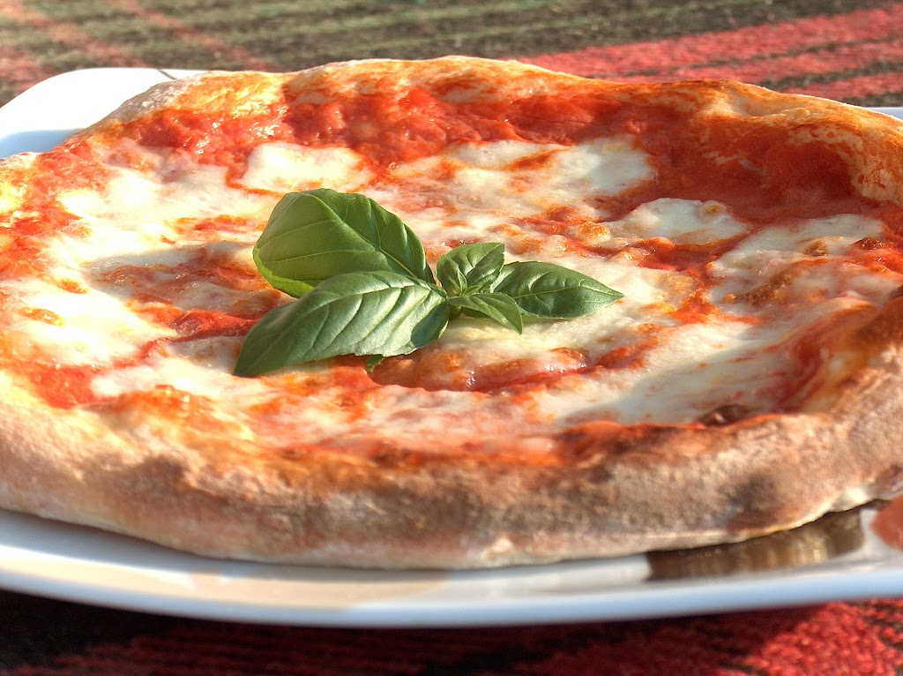

1 + 1[1] 2
Pasta with pesto is easy to made and it’s quite popular - not just in Italy. Also German students eat it nearly every week.
Quarto enables you to weave together content and executable code into a finished document. To learn more about Quarto see https://quarto.org.
When you click the Render button a document will be generated that includes both content and the output of embedded code. You can embed code like this:
1 + 1[1] 2You can add options to executable code like this
[1] 4The echo: false option disables the printing of code (only output is displayed).
Social Media Behavior